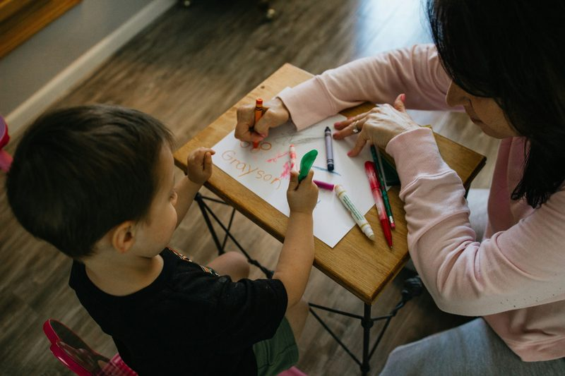

Understanding Speech Milestones
Every child develops at their own pace, but there are general milestones that pediatric speech-language pathologists use as benchmarks. Speech development begins long before a child says their first word — it starts with cooing, babbling, and responding to sounds. By 12 months, most children say one or two words. By 18 months, a vocabulary of 20 words is typical. By age 2, children typically combine two words together, and by 3 years old, most speech is understandable to familiar adults. When a child consistently falls behind these milestones, it may be a sign that a professional evaluation is warranted. Early identification is one of the most powerful tools in a child's developmental journey — the sooner a concern is identified, the sooner progress can begin. Parents and caregivers are often the first to notice subtle shifts in communication, making their observations a vital part of the evaluation process.
Early evaluations open the door to meaningful progress.
5 Signs to Watch For

Parent involvement is key to a child's communication growth.
Sign 1: Limited vocabulary for their age. If your child has fewer words than expected for their age group — for example, fewer than 50 words by 24 months — this can be an early indicator. Sign 2: Difficulty being understood. By age 3, strangers should understand about 75% of what your child says. If only close family members can decipher their speech, an evaluation is a good step. Sign 3: Frustration or withdrawal when communicating. If your child becomes visibly frustrated when trying to speak, or withdraws from social situations because communication is difficult, this is worth exploring. Sign 4: Not combining words. Most children begin combining two or more words by 24 months. A lack of word combinations at this age can signal expressive language delays. Sign 5: Regression in speech or language skills. If a child who was previously using words or phrases stops doing so, this should be evaluated promptly. Regression in communication can sometimes be associated with other developmental factors that benefit from early support.